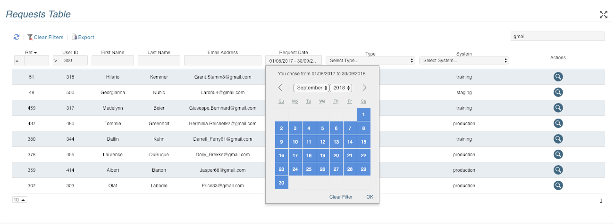

react-redux-datatable


Dynamic data table using React and Redux that fetches JSON from a predefined API. Designed to build asynchronous React-Redux tables quickly and consistently.

- Filter column values by date ranges, number, text and select lists
- Paginate and Sort data
- Configurable table and column widths
- Ability to add custom filters and column formatters
- Optional local storage of filter data
- Uses React and Redux with a predefined API
- Add table headers
- Toggle full screen view
- Export to csv
Demo
Documentation
You will find full documentation here
Contributing
See the Contributors Guide
License
The MIT License (MIT). Please view the License File for more information.